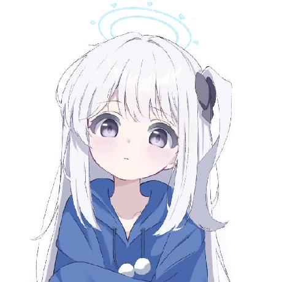

追番、听歌、写代码。AI 是我的高频搭档，而真正要留下的，是那些亲手打磨过的小成果。

我是玄明，也可以叫我 MystHiru。喜欢让屏幕里出现一点新东西：一个工具、一段自动化流程，或者只是一个终于跑通的页面。
我不太擅长把自己包装成某种标准答案。现在的状态是边学边做，边做边收集灵感。
面向多种设备的 Kernel 构建与自动化流程。
一个记录兴趣、项目和阶段性想法的小空间。
还在整理灵感，等它变成可以运行的东西。